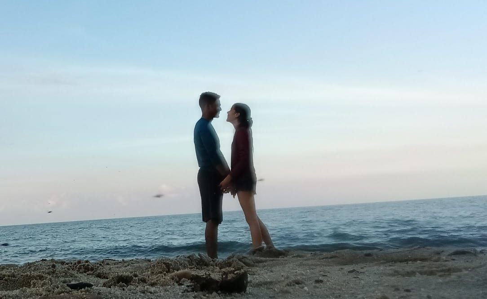
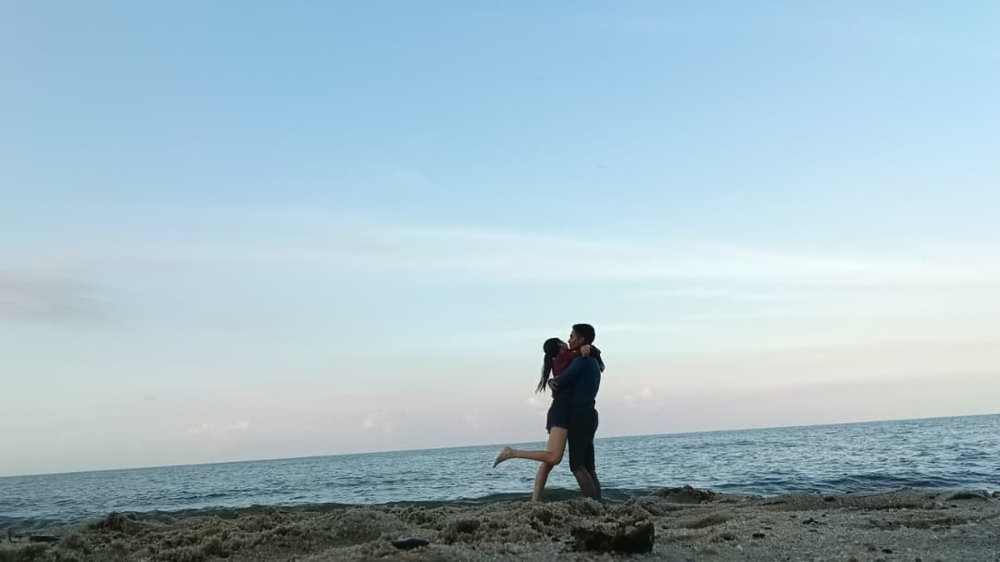
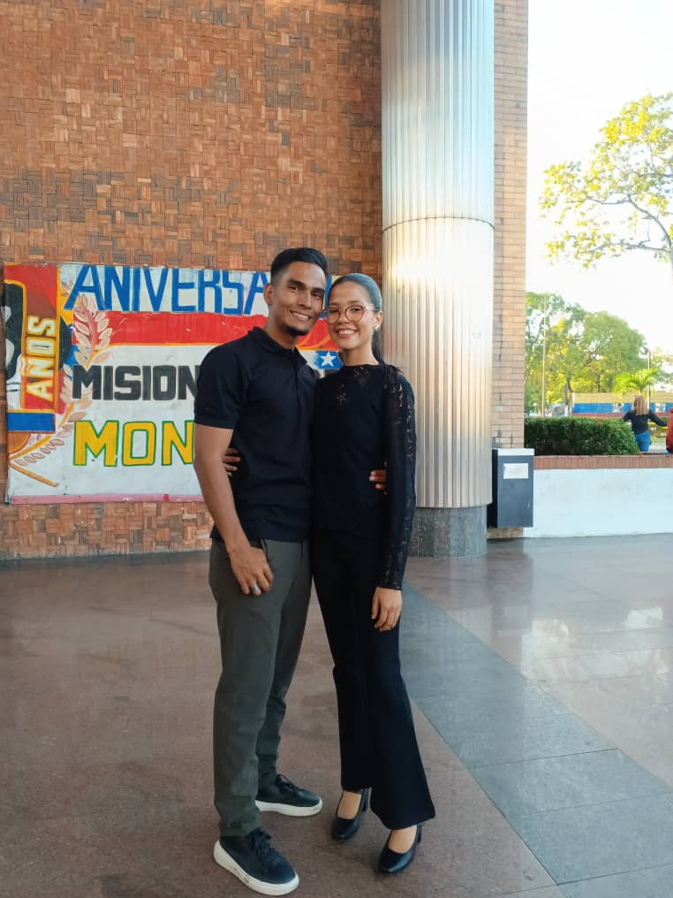
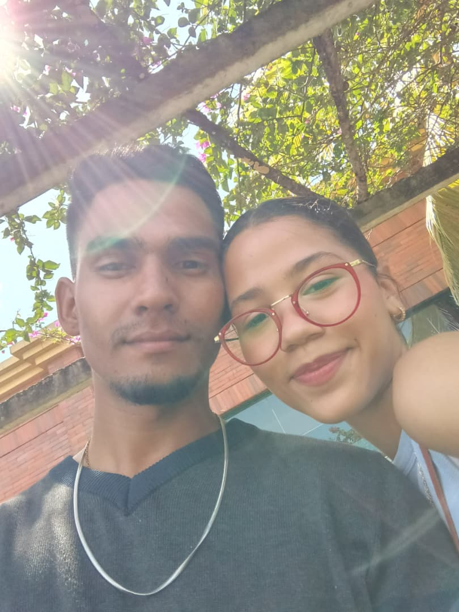

Para la personita más especial de mi vida, Mushu ✨
Éramos muy jóvenes para darnos cuenta. Un día llegaba Pedro de la universidad e iba caminando a su casa, llevaba unos audífonos puestos pero el de la oreja derecha no lo tenía[cite: 3]. Entonces fue cuando escuchó un silbido el cual no sabía que lo cambiaría para el resto de su vida.
En ese mismo instante Pedro se volteó a ver qué sucedía y fue cuando pudo admirar a la más hermosa chica que jamás había visto en su vida, con una sonrisa tan preciosa que contagiaba a cualquiera que la viera y una mirada la cual hacía que todo aquel que la presenciaba terminaba perdido en su interminable belleza. Fue entonces cuando Pedro y Laura cruzaron miradas por primera vez en sus vidas, lo cual no sabían que ese sería apenas el comienzo de su hermosa historia de amor.
Pedro y Laura se volvieron inseparables desde aquella vez que cruzaron miradas, hasta ahora que se les cruzan los cables a los dos en ocasiones. Empezaron a conocerse y a descubrir todas y cada una de las facetas del otro: algunas buenas, otras malas, pero nunca dejaron de amaraje. Hubieron problemas, discusiones, rompimientos, desilusiones e incluso insultos, pero su amor jamás se apagaba; seguía siendo el mismo e incluso más fuerte, porque era verdadero amor.
Y aunque en algunas ocasiones todo era problemas, ellos jamás se abandonaron. Cada obstáculo hacía más fuerte su relación. No todo era malo: salían, iban al cine, comían helado, veían películas, hacían hasta mercado juntos y charlaban de cómo iba a ser cuando se casaran y tuvieran su casita juntos. Su primera cita fue en el cine, un poco improvisada pero sin duda la mejor de todas (vieron Moana y la pasaron de maravilla). Compartían comida, hacían postres juntos (Laura los hacía y Pedro solo veía), bailaban, cantaban, y hasta decidieron el nombre de su primera hija, la cual se llamará Nabi. Desde entonces su visión ya no era solo un noviazgo, sino de una familia.
La mejor parte del día era cuando ellos estaban juntos, pues era en ese momento donde nada más importaba, solamente ellos dos. Laura siempre lo hacía reír con sus ocurrencias, bailes, chistes, cantos y hasta con morisquetas que hacían que Pedro se llenara de vida y felicidad.
En cambio, Pedro era serio, seco y un poco antiparabólico, no tenía casi humor... o eso creía él, pues desde que se encontró al amor de su vida llamada Laura, descubrió una parte de él que jamás pensó que existiera. Desde entonces él empezó a reír, cantar, bailar e incluso hacer chistes sin coherencia alguna, simplemente por hacer reír a su amada. Sin importar lo bobo que se veía con tal de hacer feliz al amor de su vida, todo era válido. Siempre hacían una torta cada vez que cumplían mes de aniversario para celebrar su amor y la felicidad que llegó a sus vidas.

De aquí al fondo del mar a brinquitos de medusa 🌊

Caminando juntos hacia adelante 🤍

Nuestras aventuras y risas invaluables ✨

Celebrando cada pasito de nuestro amor 🎂
A pesar de todos los recuerdos hermosos, los momentos vividos y las asombrosas citas improvisadas que hacían fortalecer más y más su relación, no siempre todo era color de rosa; estaban las peleas, las discusiones y las etapas constantes donde se desconocían el uno al otro. Pero con todas las trabas, obstáculos y pruebas, ellos seguían eligiéndose el uno al otro para pasar el resto de sus vidas juntos.
Desde entonces han sido lo mejor que les ha pasado el uno al otro; con sus altas y bajas siguen siendo esa hermosa pareja que intenta y se esfuerza por salir adelante y tener esa vida que tanto sueñan y que tanto anhelan tener juntos. Ahora solo queda ver cómo crece y sigue creciendo ese amor entre ellos dos, y poder aprender que aunque las circunstancias estén en contra, siempre que ellos se mantengan unidos nada ni nadie los podrá separar.